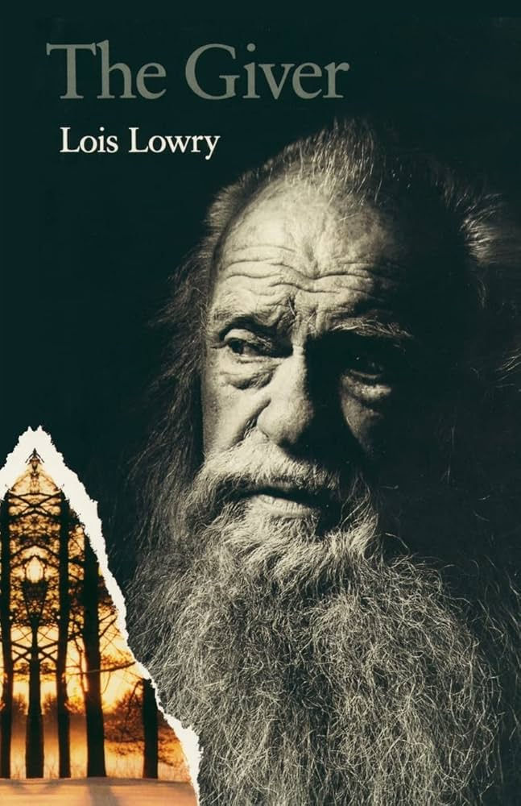

The Giver by Lois Lowry

"The Giver" by Lois Lowry is a classic dystopian fiction book that explores the contrast between individuality and "sameness." Jonas, the protagonist who is eleven years old, has been anticipating his coming-of-age "Twelve" Ceremony, where each child's future occupation is chosen for them based on what the "Committee of Elders" and omnipresent "Speakers" see while watching your every move.
The word "dystopian" would probably never exist in Jona's community, as everyone seems pleased with being identical and blind to the knowledge of the true freedoms life provides. The members of Jona's dominated community behave in an eerie, robotic way, as if each member has no sense of self, emotion, or knowledge of their existence. Every member has the same specialized replies for every conversation and interaction they have with each other, as every aspect of their lives has been pre-made since the coming of their existence.
For instance, Jonas had been selected to be in the specific family unit, and after every apology, a person is required to respond, "I accept your apology." These repeated and required responses make communication predictable within the community. Nobody knows what's beyond the community. Even death is masked as a "release" to control others, although Jonas uncovers the truth of this.
Jonas is unlike the rest; although a victim of dominance, he is given a special occupation--the "Receiver of Memory"--during his anticipated ceremony, which he feels very apprehensive about. He is given a mentor to train for this position, known as "The Giver," who shows him feelings no one else had ever felt. He learns unexpected truths about his family and community, and what it means to be individual and imperfect through the memories he's given. It is up to Jonas to act upon this new knowledge he received and memories he encountered of life and choose to be ignorant or explore what it means to be free with all its risks.
"The Giver" clearly and effectively shows what a dystopian community looks like and why individuality is essential for freedom. It depicts a "perfect community" ruled by a type of dictatorship and how it can blindly lead people to lose their sense of purpose through lack of memory. I would recommend this book to everyone who enjoys eerie feelings, mysteries, and suspense, and who seeks a more open mind and perspective on the world we live in today, as it reflects many moments throughout history.
Filed under Dystopia, Coming of Age